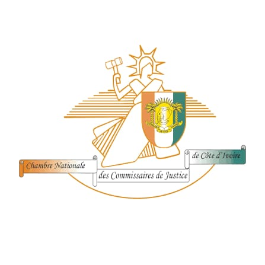

Une étude de Commissaire de Justice au service du droit, implantée à San Pedro.
Commissaire de Justice
Officier public et ministériel assermenté, exerçant sous l'autorité du Ministère de la Justice de Côte d'Ivoire.
Le Cabinet YAH est l'étude de Maître Maho N. Jospin, Commissaire de Justice assermenté, dont le siège social est établi à San Pedro. Officier public et ministériel, il est habilité à signifier les actes de procédure, exécuter les décisions de justice, dresser des constats et procéder au recouvrement de créances, sur l'ensemble du territoire national.
Membre de la Chambre Nationale des Commissaires de Justice de Côte d'Ivoire, le Cabinet YAH inscrit son action dans le respect des règles déontologiques strictes qui encadrent la profession : impartialité, indépendance, secret professionnel et loyauté envers la loi.
Garantir à chaque requérant(e) — particulier, entreprise, banque ou institution — l'application effective et diligente de ses droits, en apportant rigueur procédurale, réactivité et clarté à chaque étape de son dossier.
Toute information confiée au cabinet est traitée avec une stricte confidentialité.
En tant qu'officier ministériel, le cabinet agit avec neutralité dans l'exercice de ses missions.
Chaque acte est établi et exécuté dans le strict respect du cadre légal en vigueur.
